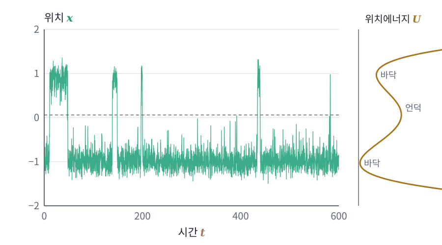

장벽 넘기: 골짜기 사이를 건너는 데 걸리는 시간
샘플러의 온도를 맞추면 샘플러는 결국 원하는 볼츠만 분포에 이른다. 그런데 「결국」은 얼마나 걸릴까? 샘플러가 실제로 마주하는 분포는 봉우리가 여럿인 경우가 많다. 사후분포는 비슷하게 좋은 매개변수 묶음 여러 곳에 봉우리를 갖고, 이미지 분포는 종류가 다른 이미지마다 봉우리가 따로 있다. 에너지로 보면 봉우리마다 골짜기가 있고 그 사이에 언덕이 있다. 한 골짜기에서 출발한 샘플이 언덕 너머 다른 골짜기로 건너가는 데는 얼마나 걸릴까?
역사: 반응의 빠르기는 왜 온도에 지수로 바뀌나
1889년 스반테 아레니우스는 라이프치히의 오스트발트 연구실에서 산이 사탕수수 설탕을 분해하는 반응의 빠르기가 온도에 따라 바뀌는 모습을 따지면서, 빠르기가 e^(−(어떤 에너지)/(기체 상수 × 온도))에 비례한다는 식을 내놓았다. 그보다 앞선 1884년에 반트 호프가 평형 상수가 온도에 따라 바뀌는 식에서 같은 꼴을 짐작했고, 아레니우스는 이것을 반응 빠르기에 맞춰 보였다. 그러나 이 지수 꼴이 어디서 오는지는 오래 설명되지 않았다. 1940년 한스 크라머르스는 반응을, 에너지 우물에 갇힌 입자가 브라운 운동의 흔들림에 떠밀려 에너지 장벽을 넘어가는 일로 보고 랑주뱅 방정식으로 넘어가는 빠르기를 계산했다(『피지카』 7권). 화학 반응의 지수 꼴이 마찰과 잡음을 받는 입자 하나의 길에서 나온 것이다.
기울어진 이중 우물을 건너는 시간
이번에도 기울어진 이중 우물 U(x) = 2(x² − 1)² + 0.5x를 쓴다. 건너는 시간을 적분 하나로 정확히 계산할 수 있는 가장 간단한 두 골짜기이기 때문이다. 왼쪽 골짜기 바닥(x ≈ −1.03)에서 두 골짜기 사이 언덕 꼭대기(x ≈ 0.06)까지 올라가는 높이는 2.52이고, 오른쪽 바닥(x ≈ 0.97)에서는 1.52다. ζ = 1, D = kT로 두고, 한 골짜기 바닥에서 출발한 입자가 다른 골짜기 바닥에 처음 닿기까지 걸리는 평균 시간을 온도를 바꿔 가며 계산하면 다음과 같다.
| 온도 kT | 왼쪽 → 오른쪽 (장벽 2.52) | 오른쪽 → 왼쪽 (장벽 1.52) |
|---|---|---|
| 1 | 8.2 | 3.4 |
| 0.5 | 94 | 14.5 |
| 0.25 | 13,600 | 279 |
온도를 절반으로 낮출 때마다 왼쪽에서 건너는 시간은 약 11배, 다시 145배로 불어난다. 장벽 높이 ÷ kT가 2.52에서 5.05로, 다시 10.1로 늘어나므로, e^2.52 ≈ 12배, e^5.05 ≈ 156배와 거의 같은 비율이다. 건너는 시간은 대략 e^(장벽 높이/kT)에 비례한다. 언덕을 넘으려면 내리막을 거스르는 운 좋은 흔들림이 여러 번 이어져야 하는데, 언덕 꼭대기에 있을 확률이 골짜기 바닥보다 볼츠만 인자 e^(−장벽 높이/kT)만큼 작기 때문이다. 이렇게 흔들림이 쌓여 에너지 언덕을 넘어가는 일을 장벽 넘기 (골짜기에 갇힌 입자가 흔들림에 떠밀려 에너지 언덕을 넘어가는 일, barrier crossing)라 하고, 그 시간은 장벽 높이를 온도로 나눈 값에 지수로 늘어난다.

ML에서: 잡음으로 골짜기 메우기
송과 에르몬(2019)은 스코어로 랑주뱅 샘플러를 돌려 이미지를 만들 때 바로 이 벽에 부딪혔다. 봉우리가 서로 멀리 떨어져 있으면 스코어를 정확히 알아도 랑주뱅 사슬이 봉우리 사이의 비중을 제때 맞추지 못한다. 그들의 처방은 데이터에 잡음을 섞어 퍼뜨린 분포부터 쓰는 것이었다. 잡음을 크게 섞은 분포는 봉우리 사이 골짜기가 메워져 장벽이 낮으므로 사슬이 쉽게 오가고, 잡음을 조금씩 줄여 가며 그때그때의 분포에서 몇 걸음씩 랑주뱅을 돌리면 샘플들은 비중을 지킨 채 원래 분포로 옮겨 간다. 이 방법을 담금질 랑주뱅(annealed Langevin dynamics)이라 부른다. 영어 annealing(달군 금속을 천천히 식히기)을 옮긴 이름이라, 급히 식히는 금속 가공의 담금질과는 뜻이 반대다.
문제 14. 앞면이 연달아 나와야 열리는 문
동전을 던져 앞면이 h번 연달아 나와야 열리는 문이 있다. (가) h = 5이면 평균 몇 번 던져야 문이 열리는가? (나) h = 10이면? h를 두 배로 늘리면 기다리는 시간은 몇 배가 되는가?

앞면 다섯 번 연속은 확률 1/32이니까 32번쯤이요. 열 번 연속은 1024번이고요.

32번은 너무 짧아. 중간에 뒷면이 나오면 처음부터 다시 세야 하잖아. 돌려 보니 평균 62번, 열 번 연속은 2056번이야.

정확한 값은 2^(h + 1) − 2번, 곧 62번과 2046번이에요. 어느 쪽이든 h에 대해 지수예요. h가 5에서 10으로 두 배가 되면 기다리는 시간은요?

62에서 2046이니까 33배요. 높이를 두 배로 했는데 시간은 거의 제곱이 됐네요.

이중 우물이랑 같아요. 운 좋은 흔들림이 연달아 이어져야 언덕을 넘으니까 건너는 시간이 장벽 높이에 지수로 늘어나요. 앞면 하나가 언덕을 한 칸 오르는 셈이네요.

뽑기에서 좋은 카드 다섯 장 연속은 가끔 보는데 열 장 연속은 평생 못 보는 이유네요.
문제 15. 두 봉우리 사이의 벽
목표 분포는 −2에 비중 0.2, +2에 비중 0.8인 두 정규분포의 혼합이고 표준편차는 각각 0.5다. 스코어를 정확히 알고, 사슬 1만 개를 −6과 6 사이에서 고르게 출발시켜 걸음 0.01의 랑주뱅 방정식(kT = 1)을 돌린다. (가) 시간 20 뒤 오른쪽 봉우리에 있는 사슬의 비율은? (나) 왜 그런가? 얼마나 기다려야 하는가? (다) 담금질 랑주뱅으로 잡음 표준편차를 5에서 0.1까지 열 단계로 줄여 가며 돌린다면, 단계마다 몇 걸음이면 되는가?
시간 20, 그러니까 2000걸음 뒤 오른쪽 비율이 0.52예요. 히스토그램을 보면 두 봉우리 다 예쁜 종 모양이에요. 샘플러는 잘 도는 것 같은데요.

0.8이어야 하잖아. 0.52면 처음에 오른쪽 절반에서 출발한 비율이랑 거의 같아.

아… 다들 처음 떨어진 쪽 봉우리에서만 놀았네요.

봉우리 사이의 골짜기가 얼마나 높은지 보세요.

U = −ln p니까 x = 0의 U에서 왼쪽 봉우리의 U를 빼면 6.39, 오른쪽 봉우리에서 재면 7.78이에요. 건너가려면 봉우리보다 e^6.4, 약 600배 드문 곳을 지나야 해요.
건너가는 데 걸리는 평균 시간을 정확히 계산하면 왼쪽에서 오른쪽으로 412, 오른쪽에서 왼쪽으로 1647이에요. 장벽 높이로 어림한 e^6.39 ≈ 600, e^7.78 ≈ 2400과 견주어 보세요. 크기도 비슷하고, 둘의 비는 거의 같아요.
그럼 시간 2000까지, 20만 걸음을 돌려 볼게요. 0.795요. 이제야 맞네요.
412와 1647의 비가 거의 정확히 1 : 4야. 평형에서는 왼쪽에서 넘어가는 흐름과 오른쪽에서 넘어오는 흐름이 비겨야 하니까, 넘어가는 빠르기의 비가 봉우리 비중의 비를 뒤집은 것이어야 해.

좋아요. 송과 에르몬도 두 정규분포를 1/5과 4/5로 섞은 예로 바로 이 어려움을 보였어요. (다)로 가서, 시간 2000을 기다리지 않고 담금질 랑주뱅으로 맞춰 볼까요? 왜 잡음을 섞은 분포에서 시작하면 되는지부터요.

잡음을 섞으면 골짜기가 메워지니까요. 표준편차 0.5인 잡음을 섞으면 장벽이 2.39로 낮아지고, 1을 섞으면 장벽이 사라져요.

잡음 표준편차를 5에서 0.1까지 열 단계로 줄이면서 단계마다 100걸음씩 돌렸더니… 1000걸음 만에 0.788이에요. 20만 걸음짜리랑 거의 같아요. 지도 앱에서 축소해 어느 동네인지부터 고르고 확대하는 거네요.

그런데 단계마다 10걸음이면 0.747, 1걸음이면 0.588이야. 너무 빨리 줄이면 샘플이 분포를 따라가지 못하고 뒤처지네.

그 뒤처짐을 잘 기억해 두세요. 분포를 바꾸는 빠르기와 샘플이 따라가는 빠르기가 어긋나면 무엇이 남는지는 아직 답하지 않은 질문이에요.